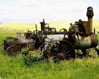

To facilitate settlement of the West, the land was surveyed and
divided into squares similar to the survey system used in the
United States. Each township is about six miles square and is
divided into thirtysix sections. Each section contains 640
acres. Correction lines occur periodically in order to allow for
the curvature of the Earth.
Because the Canadian survey system added the distances required
for road allowances within the township and the number of roads
in each township varies, townships are not exactly six square
miles.
Settlement by nonAboriginal immigrants was slow prior to
1886. People were not interested in moving west. The construction
of the railway through the southern prairies encouraged settlers,
but did not significantly increase the speed with which settlement
was occurring.
The settlers that did come were required to develop agricultural
techniques suitable to the operation of their new homesteads.
The building of the railway allowed agricultural implements and
supplies to be shipped west.
The completion of the railway and the availability of cheap land
resulted in a number of group settlements being built as farming
communities. Some of these were
- Cannington Manor located 64 kilometres
south of Moosomin,
- the Temperance Colonization Society at Saskatoon
and
- the Qu'Appelle Valley Farming Company at Qu'Appelle.
Agriculture in Saskatchewan at this time usually consisted of
planting and harvesting wheat crops. Some ranching occurred in
the area west of Moose Jaw where the Canadian Agricultural, Coal
and Colonization Company was set up to raise cattle, horses, sheep
and pigs. This ranch consisted of about 100,000 acres. The size
of this operation was unusual. The majority of beginning ranches
were operated as family businesses on a much smaller scale.
Indian peoples were also involved in the growing agriculture industry
of the West. There were many individual Indian farmers and some
Indian bands that were highly successful at farming. Problems
arose when financial support and technical expertise promised
by the federal government in the treaty agreements did not materialize.
Successful Indian agricultural operations were also undermined
by the limitations of the Indian Act. One example of these limitations
was the permit system enforced from 1885 to 1935. A permit or
pass from the Indian agent was required if an Indian wanted to
leave the Indian reserve for any length of time and for any reason.
Some of the Métis people, who had begun to establish agricultural
communities in the 1870s, were pushed off their land when European
settlers began to establish homesteads. One of the problems was
that the Métis people had laid out their farms in a manner
similar to the French in eastern Canada, that is, in riverfront
lots. The survey system did not allow for this.
Church played an important part in most settlements. The church
and the school formed the social centre of early life in western
Canada.

In the early 1900s threshing machines were not often owned by
individual farmers, but custom threshing was common. Often with large steam driven engines.
Because of the shortage of labourers for stooking and threshing and the fact
that the crop was ready to be harvested at the same time over
a large area, harvest railway excursions offered cheap fares to
men from the East who were willing to help harvest the wheat crop.
In 1908 more than 14,000 men made the trip west. |
As more settlers arrived, villages and towns were established
every seven or eight miles along the rail lines. The farmers in
the area had to be able to go to town and return and still have
time to do the daily chores. Some factors that could be considered
in the initial selection of the site for the town or village were:
level ground, the water supply, the cost of the land and if the
land was available. Some land was reserved for schools and Indian
reserves or owned by the railway.
Following the drought of 1914, good harvests produced a larger
supply of wheat than was demanded. This resulted in an oversupply
of grain, or a grain glut. Marketing wheat became more difficult.
Problems in farming during the time of the pioneers were similar
to those of today. For example, they included early frost, drought
and choices in farm management and marketing techniques. Isolation
was a factor. Farmsteads were far apart and the speed of transportation
was very slow. Homestead lands were interspersed among railway
land, Hudson's Bay land and school land.
There were also problems with the livestock industry: poor quality
stock and a lack of processing facilities.
|